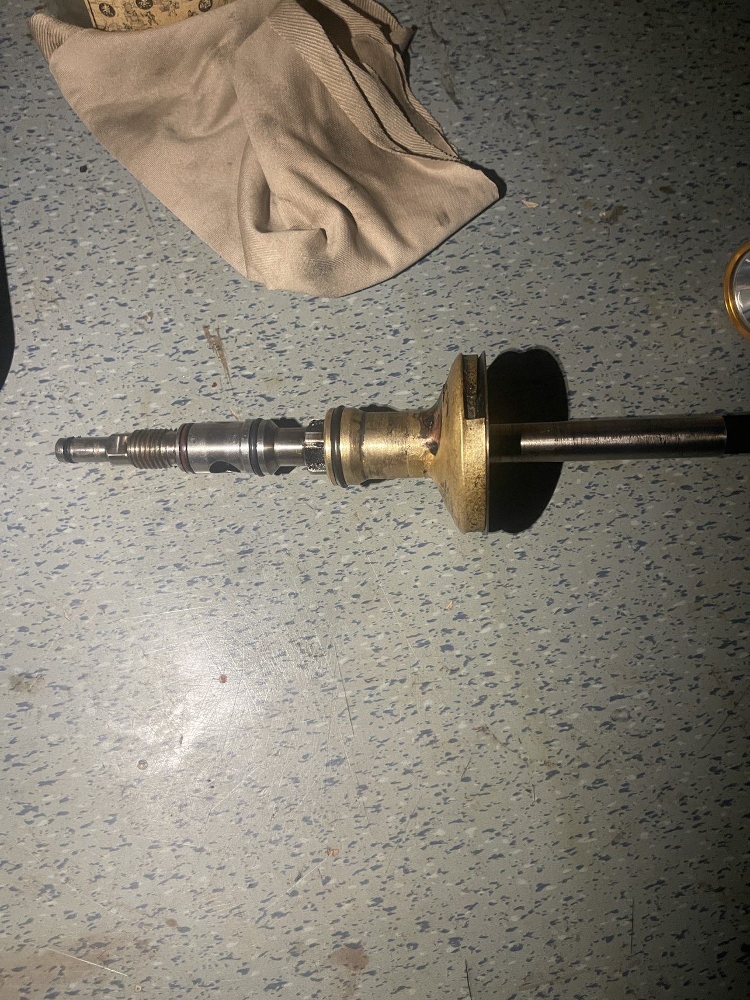
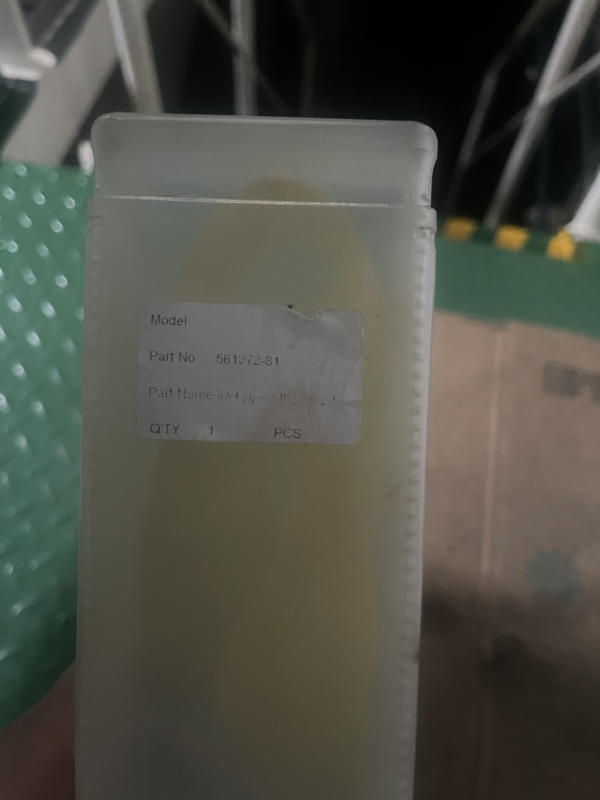
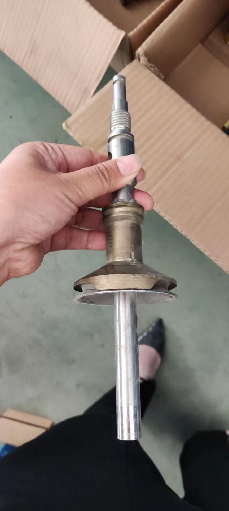
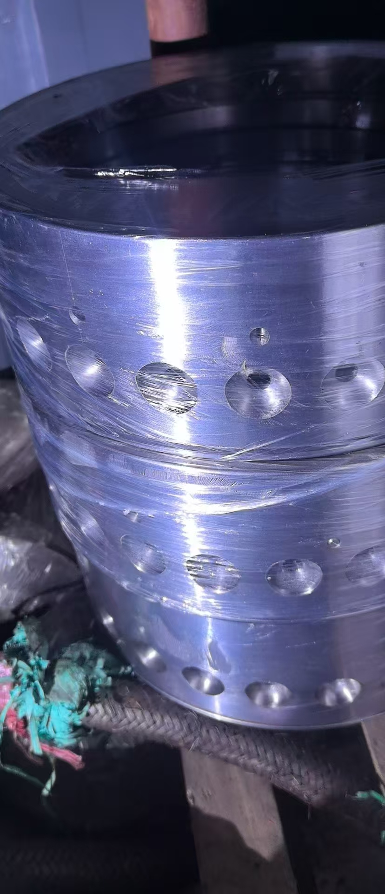
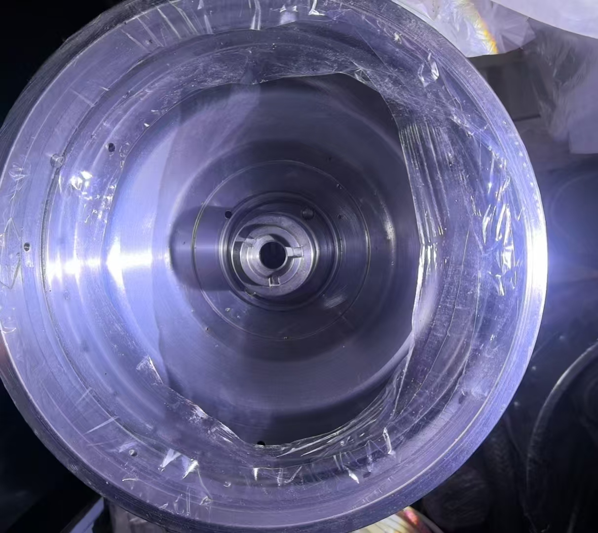
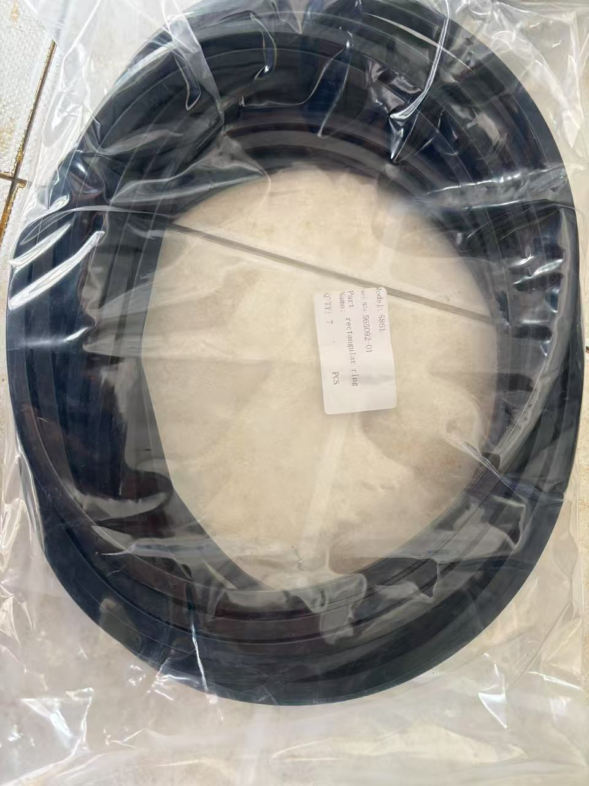
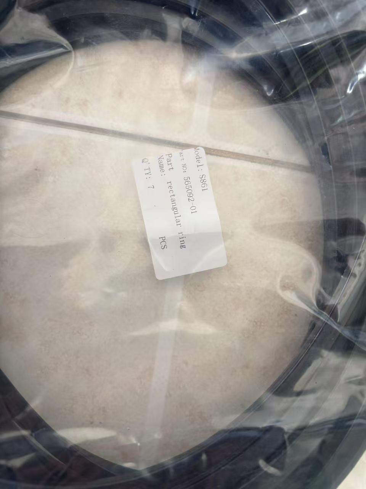
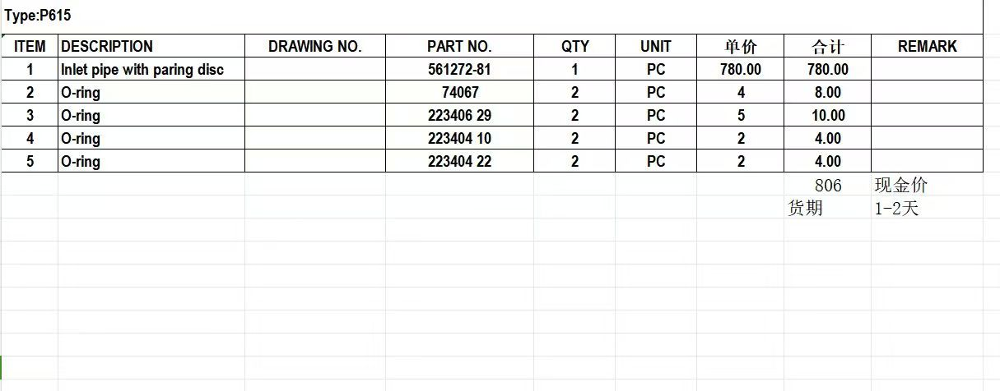

阿法拉伐P615、P605与S815分油机有什么区别？性能参数与常用配件详解

阿法拉伐（Alfa Laval）船用分油机是全球船舶燃油和滑油净化系统的主流设备。在P系列和S系列中，P605、P615和S815是用户咨询频率最高的三个型号。许多轮机人员和采购人员对它们的区别并不清楚——P605和P615同属P系列但容量不同，S815则是完全不同的S系列。本文将系统解析三者的差异。
一、P系列与S系列的核心区别
在比较具体型号之前，必须先理解P系列和S系列在技术路线上的根本差异：
| 对比项 | P系列（P605/P615/P617） | S系列（S805/S815/S817） |
|---|---|---|
| 分离技术 | Purifier净化技术 | Alcap技术 |
| 油水界面调节 | 手动——通过更换重力盘（Gravity Disc） | 自动——水传感器实时监测 |
| 最大油品密度 | 991 kg/m³（15°C） | 1010 kg/m³（15°C） |
| 主要适用油品 | 润滑油、馏分燃油 | 残渣燃油（HFO） |
| 水传感器 | 无 | 有（安装在净油出口） |
| 控制器 | EPC 60 | EPC 60 |
| 模块尺寸 | 1650×1200×1100 mm | 1650×1200×1100 mm |
| 模块净重 | 610 kg（含给料泵、加热器） | 610 kg（含给料泵、加热器） |
关键区别一句话总结： P系列靠人工更换重力盘来匹配不同密度的油品，适合密度较稳定的润滑油；S系列内置水传感器自动调节，适合密度变化大的残渣燃油。
二、P605与P615：同系列不同容量

P605和P615都属于P系列分油机，采用相同的Purifier净化技术，主要区别在于分离容量。
2.1 P605技术参数
P605是P系列中的小容量型号，适合中小型船舶或辅助系统：
- 适用油品：润滑油、馏分燃油、生物燃料
- 最大油品密度：991 kg/m³（15°C）
- 最大粘度：700 cSt（50°C）
- 分离方式：Purifier（净化）或Clarifier（澄清）
- 控制器：EPC 60
- 模块尺寸：1650 × 1200 × 1100 mm
- 模块净重：610 kg
- 主电源：三相 220-690V
- 控制电压：单相 100/110/115/230V
- 频率：50/60 Hz
- 控制气源：5-8 bar
- 操作水压力：2-8 bar
2.2 P615技术参数
P615是P系列中的中等容量型号，在润滑油处理能力上高于P605：

- 适用油品：与P605相同
- 最大油品密度：991 kg/m³（15°C）
- 最大粘度：700 cSt（50°C）
- 分离方式：Purifier或Clarifier
- 控制器：EPC 60
- 模块尺寸：1650 × 1200 × 1100 mm（与P605相同）
- 模块净重：610 kg（与P605相同）
- 电气参数：与P605完全一致
2.3 P605与P615的容量对比
P605、P615、P617三个型号的模块尺寸和重量完全相同，区别在于转鼓内部的碟片组设计和流通能力。根据阿法拉伐官方容量曲线（以筒状活塞发动机润滑油处理量计）：
- P605：低容量段，适合小型船舶辅助系统
- P615：中等容量，适合中型船舶主润滑油系统
- P617：高容量，适合大型船舶或需要大处理量的场合
选型建议：如果润滑油处理量在P605和P615之间徘徊，建议选P615留出余量。三个型号的安装尺寸完全一致，后期升级无需改动管路基础。
三、S815：Alcap技术的残渣燃油专家

S815属于S系列分油机，采用Alcap技术，与P系列有本质区别。
3.1 Alcap技术原理
Alcap技术的核心是在净油出口安装了一个水传感器（Water Transducer）。工作流程如下：
- 未处理油液经加热器加热后连续进入分离器
- 转鼓内的碟片组将油、水、杂质分离
- 水传感器实时监测净油出口的含水率
- 当检测到油水界面移动到碟片组区域时，EPC 60控制器自动触发排水或排渣
- 无需人工更换重力盘即可适应不同密度的燃油
Alcap的优势：残渣燃油（HFO）的密度可能从960到1010 kg/m³变化，传统Purifier需要针对不同批次燃油更换不同规格的重力盘，而Alcap技术全自动适应，大大减少了人工干预。
3.2 S815技术参数
- 适用油品：残渣燃油（HFO）、馏分燃油、生物燃料、润滑油
- 最大油品密度：1010 kg/m³（15°C）——比P系列高19 kg/m³
- 最大粘度：700 cSt（50°C）
- 燃油标准：ISO 8217，包括ULSFO、VLSFO、HSFO
- 分离方式：Purifier或Clarifier
- 控制器：EPC 60
- 模块尺寸：1650 × 1200 × 1100 mm
- 模块净重：610 kg
- 电气参数：与P系列一致
3.3 S815的适用场景
S815主要用于以下场景：
- 船舶主机燃油净化：处理HFO 380 cSt等高粘度残渣燃油
- VLSFO合规燃油处理：2020年限硫令后，VLSFO（密度950-991 kg/m³）成为主流，S815的Alcap技术可自动适应密度波动
- 混合燃油处理：不同港口加注的燃油密度可能差异较大，S815无需停机更换重力盘

四、P615 vs S815：关键对比

| 对比维度 | P615 | S815 |
|---|---|---|
| 分离技术 | Purifier（重力盘手动调节） | Alcap（水传感器自动调节） |
| 最大密度 | 991 kg/m³ | 1010 kg/m³ |
| 主要用途 | 润滑油净化 | 残渣燃油净化 |
| 水传感器 | 无 | 有 |
| 重力盘需求 | 需要，需根据油品密度选配 | 不需要（Alcap自动调节） |
| 油品密度变化适应性 | 需停机更换重力盘 | 全自动适应 |
| 模块尺寸 | 1650×1200×1100 mm | 1650×1200×1100 mm |
| 模块重量 | 610 kg | 610 kg |
| 控制器 | EPC 60 | EPC 60 |
| 维护周期 | 2000h/3个月（中间保养），8000h/12个月（大保养） | 相同 |
4.1 什么时候选P615？
- 船舶润滑油系统净化
- 馏分燃油（MGO/MDO）处理
- 油品密度稳定，不超过991 kg/m³
- 预算有限（P系列通常比S系列价格略低）
4.2 什么时候选S815？
- 船舶主机残渣燃油（HFO）净化
- VLSFO/ULSFO低硫燃油处理
- 油品密度可能超过991 kg/m³
- 经常在不同港口加注不同密度燃油
- 希望减少人工干预，提高自动化程度
4.3 能否混用？
P系列和S系列可以在同一模块中混装。阿法拉伐的Flex模块概念支持在一个模块内同时安装S分离器和P分离器，分别处理燃油和润滑油。这也是很多新造船的选择方案。

五、常用配件介绍
分油机的正常运行离不开定期更换的配件。阿法拉伐为P系列和S系列都提供了标准化的服务套件。
5.1 中间保养套件（Intermediate Service Kit）
保养周期：每2000运行小时或3个月（以先到者为准）
包含内容：
- 转鼓O型圈和密封件
- 进出口密封件
- 水管路密封件
中间保养主要是更换老化密封件，防止泄漏，保证分离效率。
5.2 大保养套件（Major Service Kit）
保养周期：每8000运行小时或12个月（以先到者为准）
包含内容：
- 驱动系统配件
- 传动皮带
- 轴承
- 摩擦片（Friction Pads）
- 中间保养套件全部内容
5.3 重力盘（Gravity Disc）—— P系列专用

重力盘是P系列分油机的核心配件，用于建立转鼓内油水界面的正确位置。不同密度的油品需要配用不同孔径的重力盘：
- 低密度油品（如MGO，~860 kg/m³）：大孔径重力盘
- 中密度油品（如VLSFO，~950 kg/m³）：中孔径重力盘
- 高密度油品（如HFO，~991 kg/m³）：小孔径重力盘
选错重力盘会导致：孔径过大→油随水排出（跑油）；孔径过小→水进入净油侧（净化不达标）。
S815不需要重力盘——Alcap技术通过水传感器自动调节，这是S系列的一大优势。
5.4 转鼓碟片组（Disc Stack）
碟片组是分油机的核心分离元件，由数十片不锈钢碟片叠加组成。碟片之间的间距仅0.5-1mm，油液在碟片间被离心力分离。
- 材质：通常为316L不锈钢
- 更换标准：碟片表面磨损、腐蚀或变形时更换
- 维护建议：每次大保养时清洗碟片组，检查有无损伤
5.5 其他常用配件
| 配件名称 | 功能 | 更换周期 |
|---|---|---|
| 向心泵（Paring Disc） | 将净油泵出转鼓 | 8000h或损坏时 |
| 密封环（Seal Ring） | 转鼓底部密封 | 每次中间保养 |
| 摩擦片（Friction Pads） | 离合器摩擦传动 | 每次大保养 |
| 传动皮带（Drive Belt） | 电机驱动转鼓 | 每次大保养或磨损 |
| 轴承（Bearings） | 支撑转鼓主轴 | 每次大保养 |
| 电磁阀（Solenoid Valves） | 控制操作水 | 故障时更换 |
| 压力变送器 | 监测油压 | 故障时更换 |
| 水传感器（Water Transducer） | S系列专用，监测含水率 | 校准或故障时 |
| 澄清盘（Clarifier Disc） | 澄清模式时替代重力盘 | 按需 |
六、维护保养要点
6.1 日常检查
- 检查分离器振动是否正常
- 检查净油出口压力和温度
- 检查排渣间隔时间是否正常
- 检查EPC 60控制器有无报警
6.2 定期保养
| 保养项目 | 周期 | 内容 |
|---|---|---|
| 中间保养 | 2000h/3个月 | 更换密封件、检查管路 |
| 大保养 | 8000h/12个月 | 更换皮带、轴承、摩擦片、全套密封 |
| 碟片清洗 | 每次中间保养 | 拆出碟片组清洗检查 |
| 重力盘检查 | 每次更换油品 | P系列检查孔径是否匹配 |
| 水传感器校准 | 6个月 | S系列专用 |
6.3 常见故障
| 故障现象 | 可能原因 | 处理方法 |
|---|---|---|
| 净油含水率高 | 重力盘孔径过大（P系列）/水传感器故障（S系列） | 更换重力盘/校准传感器 |
| 跑油 | 重力盘孔径过小/进油温度过低 | 更换重力盘/检查加热器 |
| 振动过大 | 轴承磨损/转鼓积垢不均 | 检查轴承/清洗转鼓 |
| 排渣不畅 | 操作水压力不足/电磁阀故障 | 检查水压/更换电磁阀 |
| EPC 60报警 | 油压低/液位高/电源故障 | 查看报警信息/逐项排查 |
七、P605/P615/S815选型总结
| 选购场景 | 推荐型号 | 理由 |
|---|---|---|
| 小型船舶润滑油净化 | P605 | 容量适中，性价比高 |
| 中型船舶润滑油净化 | P615 | 容量充裕，留有余量 |
| 船舶主机HFO燃油净化 | S815 | Alcap技术适应高密度燃油 |
| VLSFO低硫燃油处理 | S815 | 自动适应密度波动 |
| 混合模块（燃油+滑油） | S815 + P615 | Flex模块混装方案 |
| 密度≤991的稳定油品 | P615 | 无需Alcap，降低成本 |
| 密度可能>991的油品 | S815 | P系列无法处理 |
总结
阿法拉伐P605、P615和S815虽然外观尺寸相近，但技术路线和适用场景截然不同。P605和P615采用Purifier净化技术，通过重力盘手动调节油水界面，适合密度稳定、不超过991 kg/m³的润滑油和馏分燃油；S815采用Alcap技术，内置水传感器自动调节，适合密度波动大、最高可达1010 kg/m³的残渣燃油。
选型的核心在于：明确你的油品类型和密度范围。润滑油选P系列，残渣燃油选S系列，两者还能在Flex模块中混装。配件方面，中间保养套件（2000h）和大保养套件（8000h）是必备消耗品，P系列还需要根据油品密度配备不同规格的重力盘。
如需P605、P615、S815分油机的配件报价或技术支持，欢迎联系我们获取专业服务。